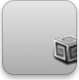
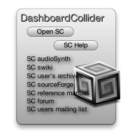
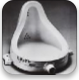
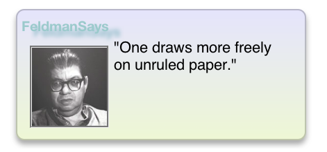

DashboardCollider
Launch SuperCollider Audio Software from the
Dashboard as well as connect to resources.
This widget also has the ability to be dragged
onto the desktop to be used right along side SuperCollider.

Version 1.0, sp030
By Brian B. James
Released: March 4, 2007
Latest Build: March 7, 2007
.zip Filesize: 278 KB
Mac OS X 10.4 Tiger is required as well as SuperCollider software. If you’re using Safari, click the download link. When the widget download is complete, show Dashboard, click the Plus sign to display the Widget Bar and click the widget’s icon in the Widget Bar to open it. If you’re using a browser other than Safari, click the download link. When the widget download is complete, unarchive it and place it in /Library/Widgets/ in your home folder. show Dashboard, click the Plus sign to display the Widget Bar and click the widget’s icon in the Widget Bar to open it.
Notes: This widget will only work 100% correctly if your SuperCollider application resides in the "SuperCollider_f" folder which should live in the Applications folder of the startup disc (I'm working on fixing this).
DashboardCollider is Freeware, © 2007 Brian B. James. Some code, © 2005 Apple Computer, Inc.

DuchampSpeak
Daily Quotes by Artist Marcel Duchamp

Version 1.2, sp029
By Brian B. James
Released: February 26, 2007
Latest Build: March 22, 2007
.zip Filesize: 280 KB
Mac OS X 10.4 Tiger is required. If you’re using Safari, click the download link. When the widget download is complete, show Dashboard, click the Plus sign to display the Widget Bar and click the widget’s icon in the Widget Bar to open it. If you’re using a browser other than Safari, click the download link. When the widget download is complete, unarchive it and place it in /Library/Widgets/ in your home folder. show Dashboard, click the Plus sign to display the Widget Bar and click the widget’s icon in the Widget Bar to open it.
DuchampSpeak is Freeware, © 2007 Brian B. James. Some code, © 2005 Apple Computer, Inc.
FeldmanSays
Do you follow the music of the New York School?
Do you follow the art of the New York Abstract Expressionists?
If you said yes to either, this is the widget for you.
FeldmanSays supplies you with a thought by composer
Morton Feldman everytime you click it.

Version 1.2, sp028
By Brian B. James
Released: February 2, 2007
Latest Build: March 22, 2007
.zip Filesize: 880 KB
Mac OS X 10.4 Tiger is required. If you’re using Safari, click the download link. When the widget download is complete, show Dashboard, click the Plus sign to display the Widget Bar and click the widget’s icon in the Widget Bar to open it. If you’re using a browser other than Safari, click the download link. When the widget download is complete, unarchive it and place it in /Library/Widgets/ in your home folder. show Dashboard, click the Plus sign to display the Widget Bar and click the widget’s icon in the Widget Bar to open it.
FeldmanSays is Freeware, © 2007 Brian B. James. Some code, © 2005 Apple Computer, Inc.
SartreSpeak
Daily Quotes by Jean-Paul Sartre

Version 1.1, sp031
By Brian B. James
Released: March 23, 2007
Latest Build: March 23, 2007
.zip Filesize: 248 KB
Mac OS X 10.4 Tiger is required. If you’re using Safari, click the download link. When the widget download is complete, show Dashboard, click the Plus sign to display the Widget Bar and click the widget’s icon in the Widget Bar to open it. If you’re using a browser other than Safari, click the download link. When the widget download is complete, unarchive it and place it in /Library/Widgets/ in your home folder. show Dashboard, click the Plus sign to display the Widget Bar and click the widget’s icon in the Widget Bar to open it.
SartreSpeak is Freeware, © 2007 Brian B. James. Some code, © 2005 Apple Computer, Inc.